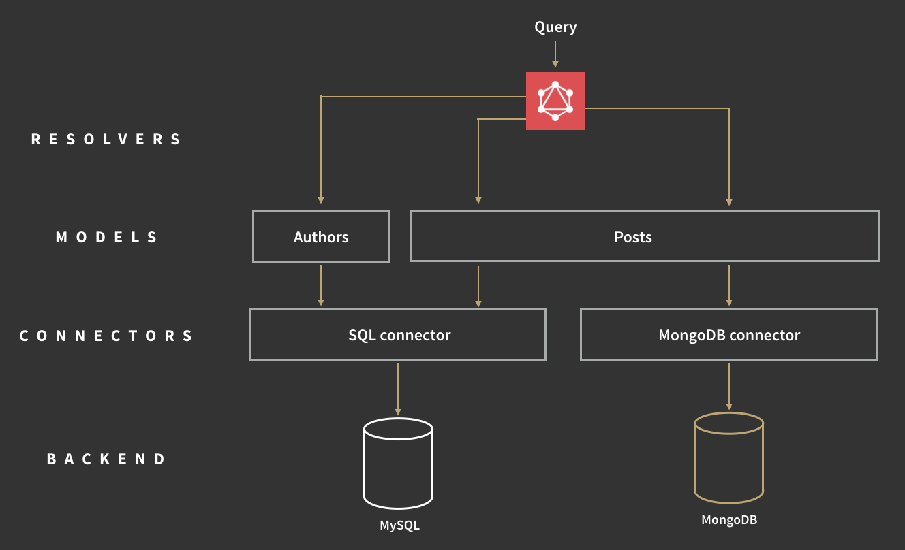

This document is intended as a design document for people who want to write connectors for various backends. Its main purpose is to specify what properties connectors should have so they can be easily shared with other people and used in Apollo without any shims.
This is a draft at the moment, and not the final document. Chances are that the spec will change as we learn about the better ways to build GraphQL servers. It should be pretty close to the final version though, so if you want to get started and build connectors for specific backends, this document is a good starting point.
Technically you could write a GraphQL server without connectors and models by writing all your logic directly into the resolve functions, but in most cases that’s not ideal. Connectors and models are a way of organizing code in a GraphQL server, and you should use them to keep your server modular. If the need arises, you can always write optimized queries directly in your resolvers or models.
Let’s use an example schema, because it’s always easier to explain things with examples:
type Author {
id: ID!
name: String
posts: [Post]
}
type Post {
id: ID!
title: String
text: String
views: Int
author: Author
}
type Query {
author(id: ID!): Author
searchPosts(titleContains: String): [Post]
}
In this example, an author has multiple posts, and each post has one author.
Here’s an illustration for how connectors and models would look like for this example if Authors and Posts were stored in MySQL, but view counts in MongoDB:

The Posts model connects to both SQL and MongoDB. Title, text and authorId come from SQL, the view count comes from MongoDB.
A connector is the piece of code that links a GraphQL server to a specific backend (eg. MySQL, MongoDB, S3, neo4j). Each backend will have its own connector. Apart from connecting the GraphQL server to a backend, connectors should also:
Both batching and caching are more important in GraphQL than in traditional endpoints, because one GraphQL query may make many separate calls to the backend to retrieve all the items where a REST endpoint would only retrieve a few items, usually in one query. The separate calls let GraphQL support a wide range of queries, whereas a single REST endpoint typically only allows querying for a narrow set of objects.
Models are the glue between connectors – which are backend‐specific – and GraphQL types – which are app‐specific. They are very similar to models in ORMs, such as Rails’ Active Record.
Let’s say for example that you have two types, Author and Post, which are both stored in MySQL. Rather than calling the MySQL connector directly from your resolve functions, you should create models for Author and Post, which use the MySQL connector. This additional level of abstraction helps separate the data fetching logic from the GraphQL schema, which makes reusing and refactoring it easier.
In the example schema above, the Authors model would have the following methods:
const Author = {
getById(id); // get an Author by id.
}
The Posts model would have the following methods:
const Posts = {
getById(id); // get Post by id
getByTitleContains(contains); //get a list of posts that have a word in the title
getByAuthor(authorId); // get list of posts by a certain author
views(postId); // get the number of views for post with ID postId (fetches from MongoDB)
}
In some cases it may be a good idea for your getById (and other) methods to take the list of fields to be fetched as an additional argument. That way the model layer can make sure to fetch only the data required from the backend. This is especially important for types that have large fields which are not always required.
Let’s presume a simple mongo connector:
// ./connectors/mongodb.js
class MongoDBConnector {
constructor(connection){
this.connection = connection;
}
closeConnection(){
this.connection.close();
}
collection(collectionName){
// caching, batching and logging could be added here
return connection.collection(connectionName);
}
}
export default MongoDBConnector
Connectors and models are easy to use in apollo server:
Step 1: Import the connector and the DB driver
import MongoDBConnector from './connectors/mongodb';
import pmongo from 'promised-mongo';
import knex from 'knex';
Step 2: Establish a connection with the DB
const mongoDB = pmongo('username:password@localhost:27017/blog');
const sqlDB = knex({ dialect: 'sqlite3', connection: { filename: './blog.sqlite' } });
Step 3: Create the model
class Author {
constructor(connectorKeys){
this.connectorKeys = connectorKeys;
}
getById(id, context){
return context.connectors[this.connectorKeys.db]
.collection('author')
.findOne({ _id: id });
}
}
Step 4: Adding models to the context
app.use('/graphql', apolloServer({
schema: Schema,
context: {
connectors: {
mongo: new MongoDBConnector(mongoDB),
sql: new SqlConnector(sqlDB)
},
models: {
Author: new Author({ db: 'mongo' }),
Post: new Post({ postDb: 'sql', viewsDb: 'mongo' }),
}
}
});
Step 4: Calling models in resolve functions
function resolve(author, args, ctx){
return ctx.models.Author.getById(author.id, ctx);
}
Question: Are models the same as GraphQL types? Answer: There will usually be a 1:1 correspondence between types in your schema and the models, so it makes sense to keep them in the same file, or at least in the same folder. The subtle difference is that while the GraphQL schema describes the types and their relationships, the models define which connectors should be used to fetch the actual data for that type.
Question: Can I use <Mongoose/Sequelize/MyOtherFavoriteORM> with Apollo Server? Answer: Yes, you can use an existing ORM if you wish. In that case, the models you use will be your ORM’s models, and the connector part will be in the ORM itself. Most ORMs don’t implement batching and caching, but in the future there should be connectors that work with various ORMs so developers don’t need to worry about batching and caching, and can keep using the ORM of their choice. In the meantime you can always start without batching and caching, and then add it manually where necessary (just as you might write an optimized raw query when using your ORM now).
Decorators can be used to modify a GraphQL schema behavior, somewhat similar to directives which modify the way a GraphQL server executes a query.
The intent of schema decorators is to make GraphQL schemas more malleable without the need for modifying the current spec. Decorators don’t enable anything that wasn’t possible before, but they make some common patterns much more reusable.
Decorators can be used for a variety of purposes:
GraphQL schema decorators use the + sign to distinguish them from directives, which use the @ sign and come after the thing they’re modifying. They could both share the @sign, but then decorators would have to come after the thing they decorate, which looks a bit awkward.
Here is an example of decorators on a schema specified with GraphQL schema language:
+connector(storage: "mongoDB")
+id(fields: ["uuid"])
type Person {
uuid: String!
name: String!
+deprecated(reason: "Use the 'name' field instead")
longName: String
friends: [Person]
}
type RootQuery {
+description(text: "find a person by name")
findPerson(name: String!)
+adminOnly
+log(type: "adminAccess")
allPersons(
page: Int = 0
+validateRange(min: 1, max: 10)
numPages: Int = 1
): [Person]
}
type RootMutation {
+requiresAuthentication
+log(type: "userAccess")
addPerson(
+maxLen(100)
name: String!
): Int
+adminOnly
+log(type: "adminAccess")
removePerson(id: Int!): Boolean
}
schema {
query: RootQuery
mutation: RootMutation
}
In GraphQL schema language, arguments to decorators follow the same spec as arguments to fields.
Decorators can be selectively applied to:
Decorators can modify the behavior of the parts of the schema they are applied to. Sometimes that requires modifying other parts of the schema. For instance, the @validateRange decorator modifies the behavior of the containing field’s resolve function.
In general, decorators either add, remove or modify an attribute of the thing they wrap. The most common type of decorator (e.g. @adminOnly, @log, @connector) will wrap one or more field’s resolve functions to alter the execution behavior of the GraphQL schema, but other decorators (e.g. @description) may add attributes to a type, field or argument. It is also possible for a type decorator to add a field to the type (e.g. @id(fields: ["uuid"]) can add the __id field).
All decorators must extend the SchemaDecorator class and implement the following interfaces:
class SampleFieldDecorator extends SchemaDecorator {
const tag = 'sample'; // matches +sample in GraphQL schema language
const locations = ['field', 'type', 'interface', 'union']; // where this decorator can be applied
// the argSignature can be used to check whether a decorator's arguments are valid.
const argSignature = {
type: GraphQLString,
min: GraphQLInt,
max: GraphQLInt
};
// the constructor is used to configure things once per server, such as database credentials.
// if the same decorator class is to be used with different configurations, then two instances
// with different prefixes have to be created.
constructor(config, prefix = ''){
this.config = config;
this.prefix = prefix;
}
getTag(){
return this.prefix + tag;
}
isWellPlaced(locationName){
return locations.indexOf(locationName) >= 0;
}
getArgSignature(){
return argSignature;
}
// apply returns a function which gets applied to the decorated thing.
apply(){
// context says what scope this decorator is being applied to, i.e. 'type', 'schema', 'field' etc.
return (wrappedThing, { schema, type, field, context }) => {
// use this.config ...
// use args
// modify wrappedThing's properties, resolve functions, etc.
}
}
}
When constructing a GraphQL schema from GraphQL schema language with decorators, all decorators need to be specified and given to the schema generation function, otherwise an error will be thrown:
import { Description, Deprecated, Validator } from 'graphql-decorators';
const shorthandSchema = gql` ... schema here `;
const availableDecorators = [ new Description(), new Deprecated(), new Validator()];
// fictional example, not the actual function signature:
const schema = makeExecutableSchema({
schema: shorthandSchema,
decorators: availableDecorators
});
The use of schema decorators is most immediately obvious in GraphQL schema language, but they can also be applied to a GraphQL‐JS schema. You might want to do this to get portable components that can be used across many schemas. Here is an example:
import { Description, DeprecationReason, Validator } from 'graphql-decorators';
// ... more imports ...
const deprecationReason = new DeprecationReason();
const description = new Description();
const validator = new Validator();
const schema = new GraphQLSchema({
query: new GraphQLObjectType({
name: 'RootQuery',
decorators: [ description.apply({ text: 'This is the root query' }) ],
fields: () => {
getString: {
type: GraphQLString,
decorators: [ deprecationReason.apply({ text: 'This field never did anything useful' })],
resolve(root, {str}){ return str; },
args: {
str: {
type: GraphQLString,
decorators: [ validator.apply({ type: 'length', min: 1, max: 1000 }) ]
},
},
},
},
}),
});
To apply these decorators, the function applySchemaDecorators(schema) has to be called like so:
import { applySchemaDecorators } from 'graphql-tools';
const schema = new GraphQLSchema({
// schema definition here
});
applySchemaDecorators(schema); // applies the decorators to the schema in place.
Many decorators can be used on the server as well as the client, which means they have to be part of the information returned by the introspection query. However, only the tag and the arguments should be shared with the client, not the configuration. The client will most likely need different configuration.
Some decorators may need to be server‐only, in which case they should not be introspectable by the client.
Decorators can be used to add metadata to a GraphQL schema in a way that is portable across different servers and clients. As long as the semantics of a decorator are well‐specified, there could be GraphQL‐JS, Graphene, Apollo‐client, Relay, Sangria, etc. implementations for the same decorator, which given the same decorator tag and arguments will do the same thing on all these different implementations. For example, they could be used to provide optimistic UI in apollo‐client and relay with zero additional code: The server version of the decorator modifies a mutation so it updates a specific store, the client version (eg. apollo‐client) updates the client cache instead.